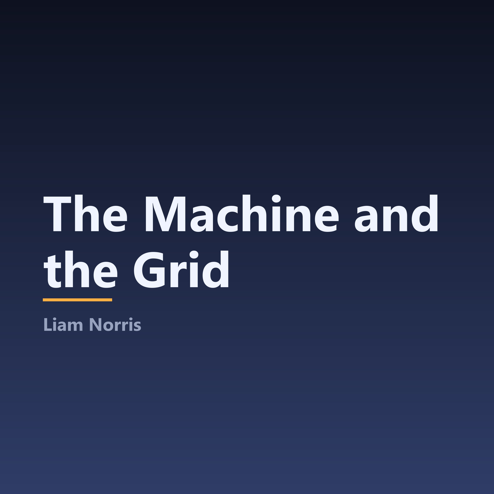

How artificial intelligence actually works, and what it takes to power it.
A single-narrator documentary series on the technologies reshaping computing and energy. Each season takes one subject and builds it from first principles: what AI is, what it runs on, what it does, and the electrical grid now straining to keep up with it.
Space to play/pause · arrow keys to skip 15s